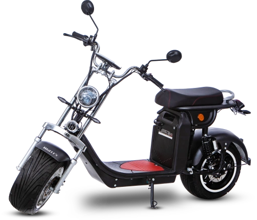

Watts W6
Mobilidade com muito mais potência
A Scooter Elétrica Watts W6 é perfeita para você que deseja mais agilidade e potência nos deslocamentos do dia a dia.
Com ela, além de economizar tempo e dinheiro com combustível, você também ajuda o meio ambiente.
A Watts W6 tem zero emissão de CO².
Potente e econômico: pilote até 80 km com apenas R$ 2,00
Com 4.000 W de potência, a Scooter Elétrica Watts W6 possui um dos motores elétricos mais potentes da linha de scooters da Watts.
Com potência e velocidade máxima de até 70 km/h, você tem autonomia para rodar por até 80 km. E o melhor: tudo isso com apenas uma bateria.
Para recarregar a Scooter Elétrica Watts W6 é muito fácil. A sua bateria é removível e o carregador é bivolt. Além de prática, é econômica: uma carga tem o custo de apenas R$ 2,00.
Especificações:
- Comprimento: 208 cm
- Altura: 101 cm
- Largura: 91 cm
- Peso: 100 kg
Opções de cores:
- PRETO WS103
- AZUL WS103B
Itens inclusos:
- 1 Scooter Elétrica Watts W6
- 1 manual de instruções
- 1 cabo de alimentação
- 1 kit de instalação